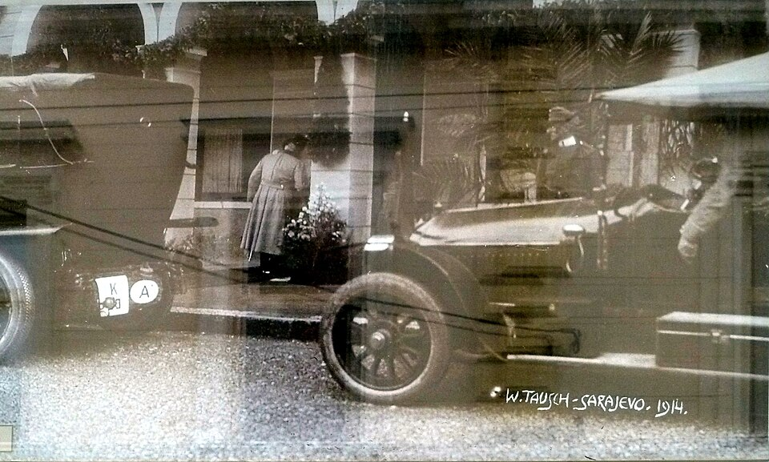

A42-POL-043 // HISTORICAL CLAIM REVIEW
Sarajevo: The Assassination Plot of 1914
Assessment: The Sarajevo assassination was a documented political conspiracy involving Bosnian Serb militants and military-connected assistance.


The precise allegation
The central allegation is that a network of Bosnian Serb revolutionary activists, supported in part by Serbian military-intelligence figures, arranged the killing of Austro-Hungarian heir Franz Ferdinand. A stronger claim—that the Serbian government as a whole ordered the murder—goes beyond what the evidence securely establishes. The assassination triggered a crisis but did not mechanically make a world war inevitable.
Chronology and political context
On June 28, 1914, Gavrilo Princip shot Franz Ferdinand and Sophie in Sarajevo after an earlier bomb attack by another conspirator failed. The assassins belonged to Young Bosnia; Serbian nationalist officers associated with the Black Hand facilitated weapons and border crossings. Austria-Hungary issued an ultimatum to Serbia, then declared war, while alliance commitments and leaders' decisions widened the conflict.
Primary historical record
Austro-Hungarian investigation and trial records document the defendants, weapons, and contacts, although the trial occurred under an occupying imperial authority with political incentives. Serbian correspondence and later records illuminate officers' networks but do not prove a cabinet-level order. Princip's own testimony and the conspirators' preparation establish a plot among participants rather than a complete state conspiracy.
Corroboration and contrary evidence
The weapons' route and assistance from Serbian officers are corroborated across testimony and scholarship. Historian Christopher Clark emphasizes decision-making by multiple governments; other scholars assign greater responsibility to Serbian nationalist networks and Vienna's response. The key distinction is between covert support by individual state-connected officers and formal authorization by Serbia's civilian government.
What remains uncertain
The precise knowledge held by Serbian officials, the role of the Black Hand's leadership, and whether the conspirators expected to kill the Archduke remain disputed. Some sources were produced under coercive conditions; later nationalist narratives either magnified or minimized Serbian involvement. Evidence that the killings helped precipitate war should not be confused with proof that any one actor planned the continental conflict.
Calibrated verdict
The Sarajevo assassination was a documented political conspiracy involving Bosnian Serb militants and military-connected assistance. The claim that Serbia's government deliberately ordered it is not proven to the same standard. The murder was a catalyst used within an already volatile diplomatic crisis, whose escalation depended on choices by Austria-Hungary, Germany, Russia, France, and Britain.
What evidence could change this assessment
Authenticated Serbian cabinet minutes, orders from Black Hand leadership, or contemporaneous correspondence showing what senior ministers knew would sharpen attribution. Evidence that the alleged officer aid was fabricated or misidentified would weaken the state-connected element. Such findings would alter responsibility for the assassination, but not erase the independent role of the great powers in the July crisis.
Sources and source limits
- Encyclopaedia Britannica — Assassination of Archduke Franz FerdinandUseful concise chronology and participants; tertiary reference that compresses ongoing historiographic debates.
- The National WWI Museum and Memorial — The assassination at SarajevoInstitutional overview of the plot and crisis; introductory account rather than full archival analysis.
- Christopher Clark, The Sleepwalkers (Penguin Random House)Presents a multi-power account based on diplomatic sources; its interpretation is influential but contested by scholars emphasizing Serbian nationalism or Austrian policy.